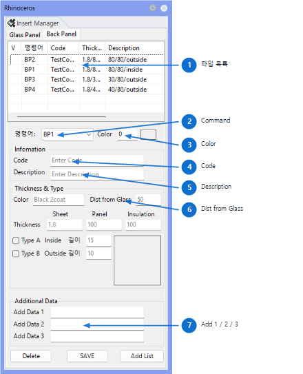

BpOpt
Opens or closes the BackPanel Type Option Panel. The type information set in the panel is used for BP1 ~ BP5 modeling, numbering, lists, and fabrication drawing creation.
Used to define and modify BackPanel types (thickness, offset distance, bend method, code, description) before BackPanel modeling. Types 1-5 configured here serve as the basis for BackPanel generation by BP1-BP5 commands, so type setup should precede modeling.

| No | Item | Description |
|---|---|---|
| 1 | BackPanel Type List | Displays registered BackPanel types in a table. Selecting an item fills the input fields below with that type's values. |
| 2 | Command | Specifies the BackPanel command to use in actual modeling. Generally linked to BP1 ~ BP5 type commands. |
| 3 | Color | Specifies the layer colour for the BackPanel model. |
| 4 | Code | Enter the code for each BackPanel type. Used as type identification in lists, tables, and drawing annotations. |
| 5 | Description | Enter a description of the BackPanel specification. Used as human-readable specification info in fabrication lists and drawing annotations. |
| 6 | Dist from Glass | Enter the distance the BackPanel is offset from the outer glass surface. Used to position the BackPanel relative to the glass reference plane during modeling. |
| 7 | Add 1 / Add 2 / Add 3 | Enter user-defined supplementary information such as position, sequence, or project-specific classification. |
| Item | Description |
|---|---|
| Sheet Thk. | Enter the BackPanel sheet thickness. |
| Panel Thk. | Enter the thickness of the BackPanel outer sheet or the bend-shape reference thickness. When not using Type B All Outside, the flange length must equal the insulation thickness. |
| Insulation Thk. | Enter the internal insulation thickness of the BackPanel. |
| Type A All Inside | All flanges face inward. Default flange fold length is 15. |
| Type B All Outside | All flanges face outward. Default flange fold length is 10. |
| Action | Description |
|---|---|
| Add List | Adds the current input values to the BackPanel type list. A duplicate name may prompt an overwrite confirmation. |
| Save | Writes the current type list to BackPanelType_Data.dat in the RCWFolder folder. Save to file if the same settings need to be reused later. |
| Apply to Modeling | BP1 ~ BP5 commands read the per-type thickness, colour, code, and description values stored in this panel to create BackPanel models. |
| Command | Description |
|---|---|
| BP1 ~ BP5 | Creates BackPanel solids using the configured BackPanel type. |
| BpNo | Assigns numbers to created BackPanels. |
| BpList | Generates a BackPanel quantity list. |
| BpTable | Generates a BackPanel fabrication drawing table. |
| BpFd | Generates BackPanel fabrication drawings. |